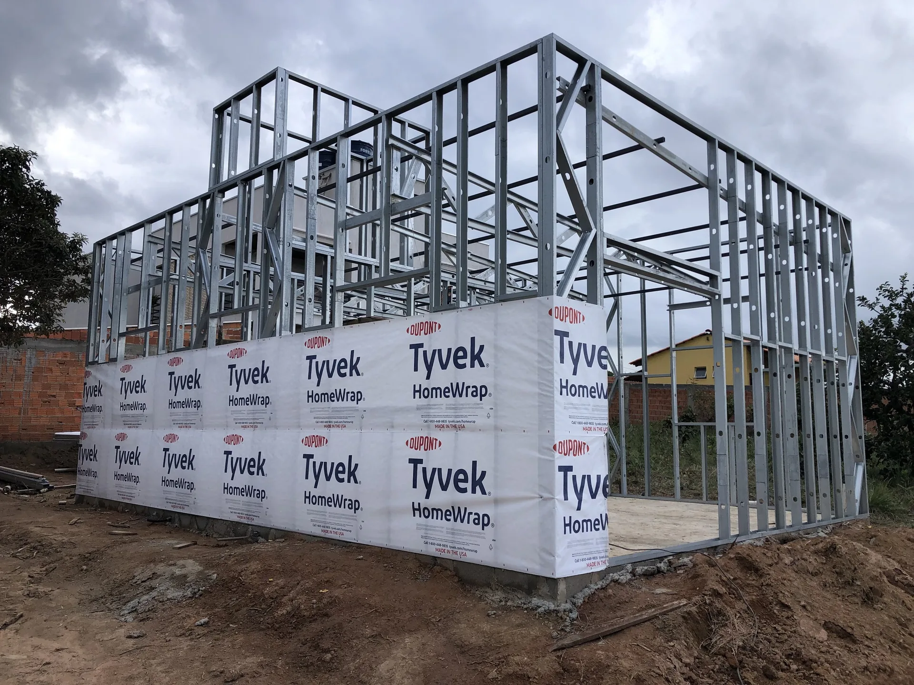
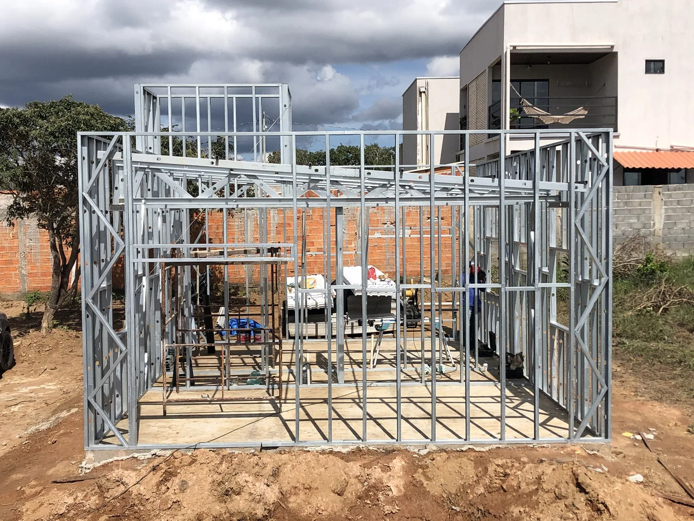
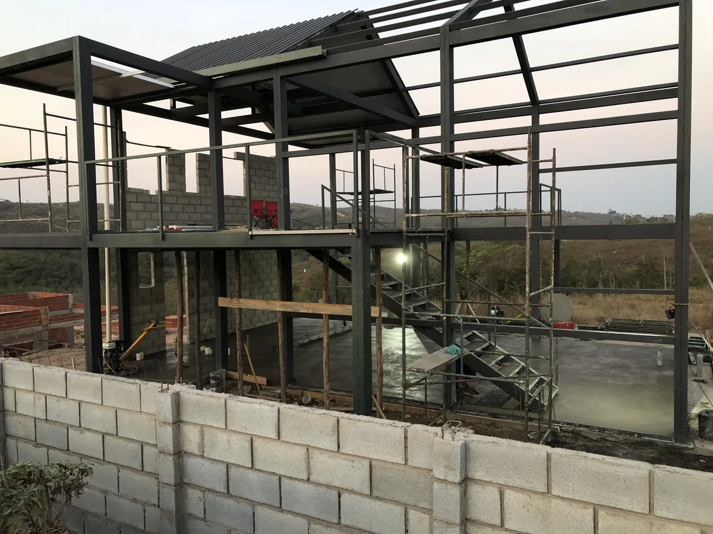
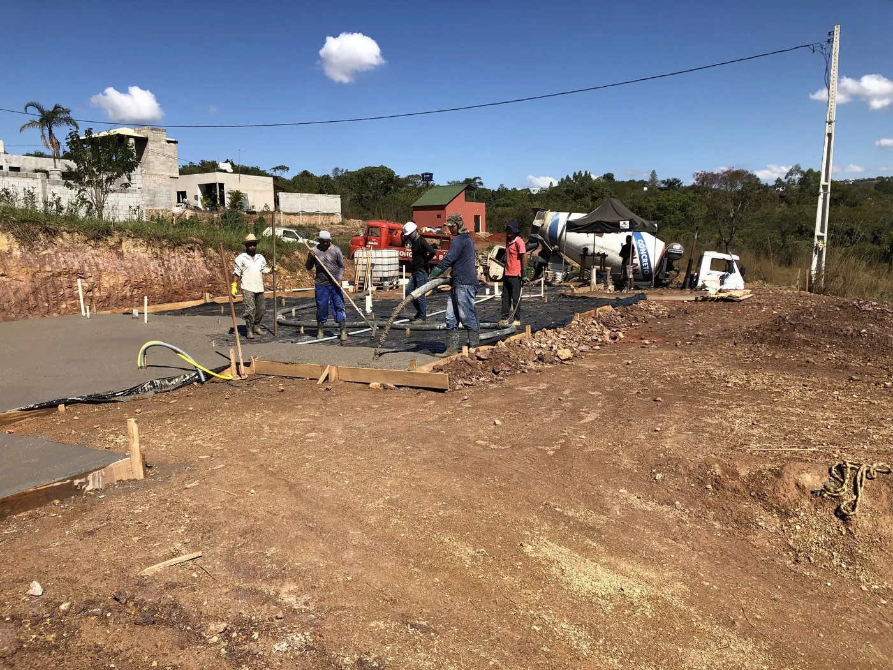

Projeto técnico
Compatibilização da estrutura com arquitetura, instalações e necessidades reais da obra.

A SD Edificações desenvolve projetos, fabricação e montagem de estruturas em Steel Frame para obras residenciais e comerciais no DF e região.

Especializada em soluções construtivas em Steel Frame, a SD Edificações une projeto, fabricação, fornecimento e execução para entregar obras mais inteligentes, organizadas e alinhadas às necessidades de cada cliente.
Atuamos em Brasília e região com foco em residências, estruturas comerciais, projetos compactos e soluções sob medida em construção a seco.
O Steel Frame é uma solução de construção a seco baseada em perfis metálicos leves, montagem precisa e etapas mais racionalizadas. Para o cliente, isso significa uma obra com mais controle, menos desperdício e melhor previsibilidade.

Steel Frame, também chamado de Light Steel Frame, é um sistema de construção a seco formado por perfis de aço leve. A estrutura é detalhada antes da obra, montada com precisão e preparada para receber fechamentos, instalações e acabamento.
É uma solução indicada para quem busca uma obra mais planejada, limpa e previsível, sem abrir mão de conforto, resistência e liberdade arquitetônica.
Compatibilização da estrutura com arquitetura, instalações e necessidades reais da obra.
Perfis e componentes organizados para facilitar logística, montagem e controle de execução.
Execução em campo com etapas claras até receber fechamentos, isolamento e acabamento final.
Os perfis são definidos a partir do projeto, o que favorece alinhamento, organização e controle de execução.
Por ser uma construção a seco, o sistema reduz etapas molhadas e ajuda a manter o canteiro mais organizado.
A racionalização dos componentes ajuda a diminuir perdas de material e retrabalhos durante a obra.
Quando projetado corretamente, o Steel Frame oferece boa relação entre peso, resistência e desempenho construtivo.
O sistema atende casas, obras comerciais, studios, anexos, ampliações e projetos personalizados.
Etapas planejadas e componentes definidos ajudam o cliente a entender melhor prazos, materiais e evolução da obra.
A SD atua nas etapas essenciais da construção em Steel Frame para tornar a jornada da obra mais simples, coordenada e segura.
Planejamento técnico e soluções estruturais alinhadas ao projeto arquitetônico e ao objetivo da obra.
Visualização detalhada para apoiar compatibilização, decisões de execução e previsibilidade.
Fabricação, fornecimento e montagem de estruturas para obras residenciais e comerciais.
Estimativas e orientação inicial para ajudar o cliente a decidir com mais segurança.
Coordenação de componentes necessários para a montagem e evolução da obra.
Execução em campo conforme planejamento, projeto e boas práticas do sistema construtivo.
Organização desde o início para que você tenha visibilidade sobre cada fase da sua construção em Steel Frame.
Entendemos terreno, necessidade, padrão desejado e viabilidade técnica.
Definimos escopo, materiais, etapas e melhor estratégia para execução.
Organizamos componentes e preparação para uma montagem mais eficiente.
Realizamos a montagem da estrutura e acompanhamos a evolução em obra.

As imagens foram distribuídas em cards e páginas internas para valorizar o portfólio sem deixar o carregamento pesado.
Uma área simples para tirar dúvidas comuns, melhorar o SEO do site e ajudar o visitante a entender se o sistema combina com o projeto dele.
É um sistema de construção a seco com perfis de aço leve. A estrutura é planejada, montada com precisão e preparada para receber fechamentos, instalações e acabamento.
Sim. O sistema pode ser usado em residências de alto padrão, casas compactas, ampliações e projetos comerciais, desde que bem projetado e executado.
Sim. A resistência depende do projeto estrutural, dos materiais especificados e da execução correta dos perfis, fechamentos e sistemas complementares.
Sim. A obra pode receber diferentes tipos de fechamento, revestimento e acabamento, conforme o projeto arquitetônico e as especificações técnicas.
Sim. O Steel Frame pode ser aplicado em lojas, salas comerciais, anexos, studios, escritórios e estruturas sob medida.
Sim. O atendimento é direcionado a Brasília, Distrito Federal e região, com análise de viabilidade conforme tipo, escopo e localização da obra.
Fale com a SD Edificações e receba uma orientação inicial para construir em Steel Frame em Brasília e região.
Clique em qualquer imagem para ampliar.